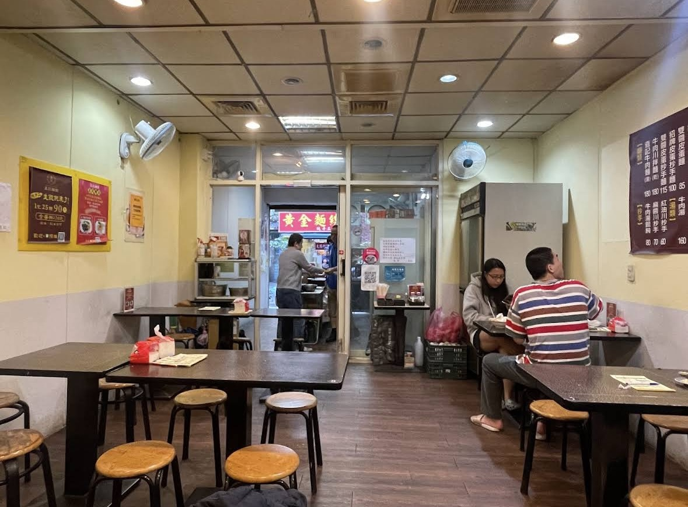
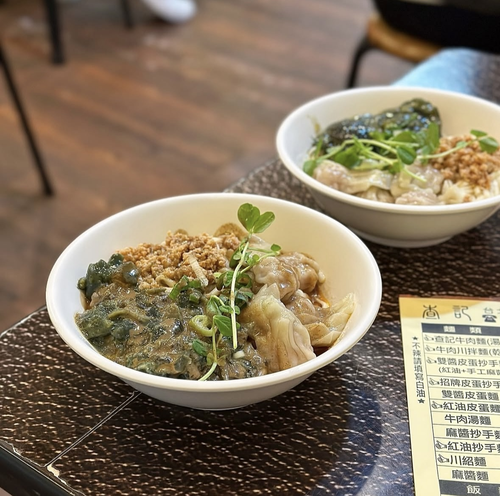

能在繁華的信義區存活下來的傳統小吃店，一定都不簡單，其中一家就是查記麵館！小小一間隱藏在信義區巷弄中，店內位置不多，假日需要提早到，因為有可能需要排隊一小時左右才可以用餐。
大家來一定要吃「招牌皮蛋炒手麵」！Q彈有筋道的麵體，吸附了碗中滿滿的皮蛋醬和肉醬，整碗麵充滿皮蛋香氣但不會讓人感覺到皮蛋的腥味。店家還會加入特製醬料，所以整體帶有微微的辣感，但不會過於刺激，辣味反而讓整碗麵的層次再上一層樓。
雖然招牌皮蛋炒手麵看起來不大碗，但略粗的麵條拌上皮蛋醬和肉末，再加上餛飩，其實吃起來很滿足。如果吃不飽的朋友，可以加點餛飩湯，湯頭清淡溫和的味道，跟招牌皮蛋炒手麵也是非常的搭。
真的是超級愛這家店！！
